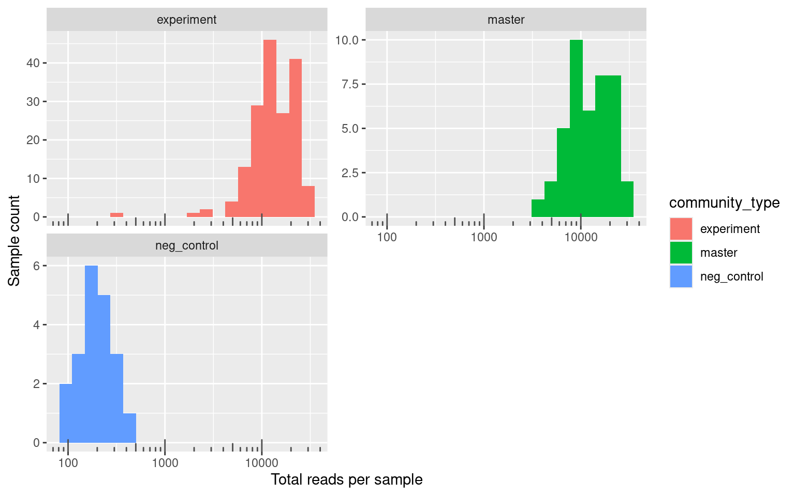
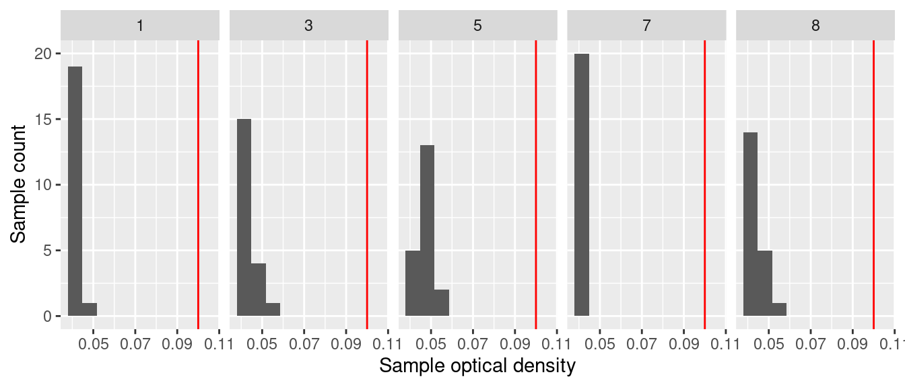
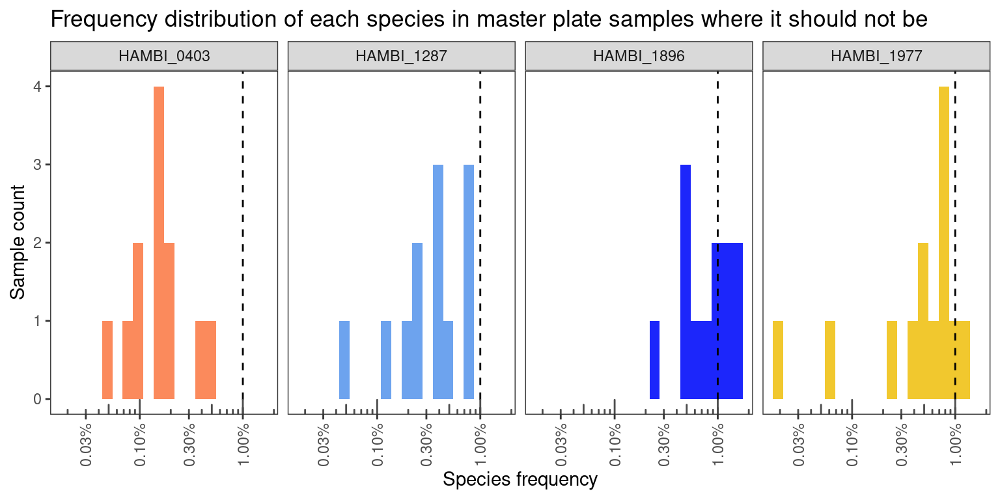
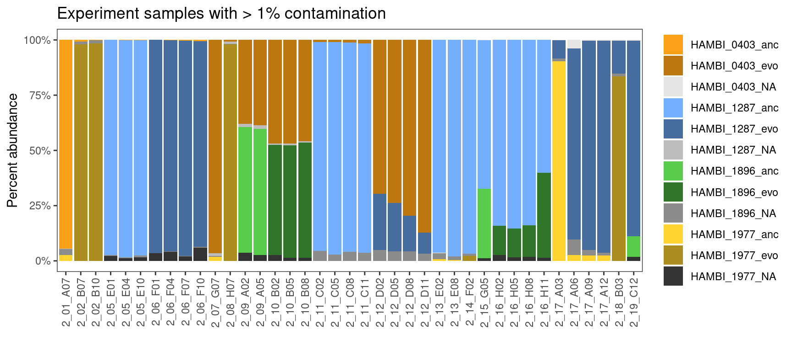
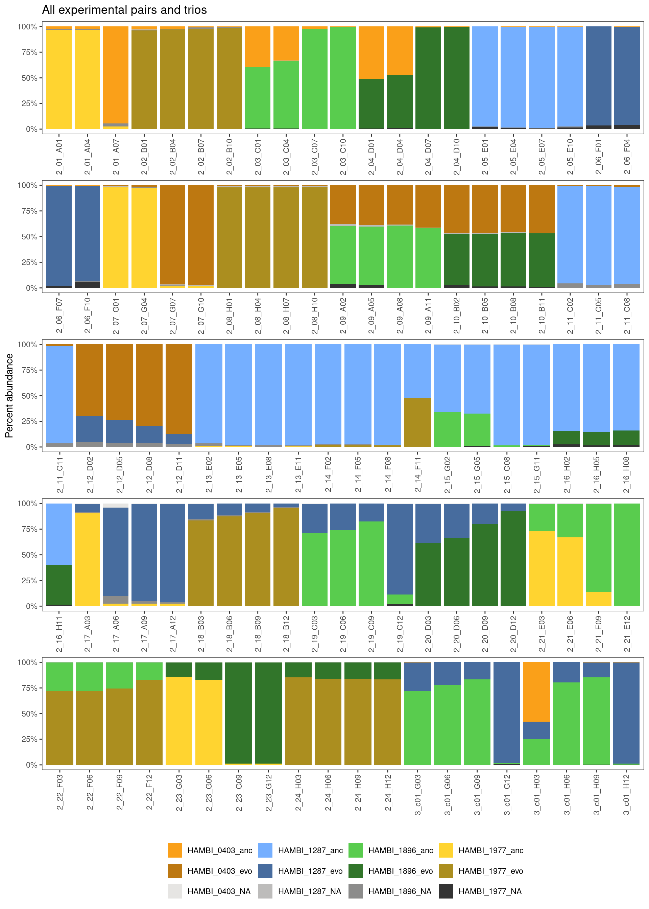
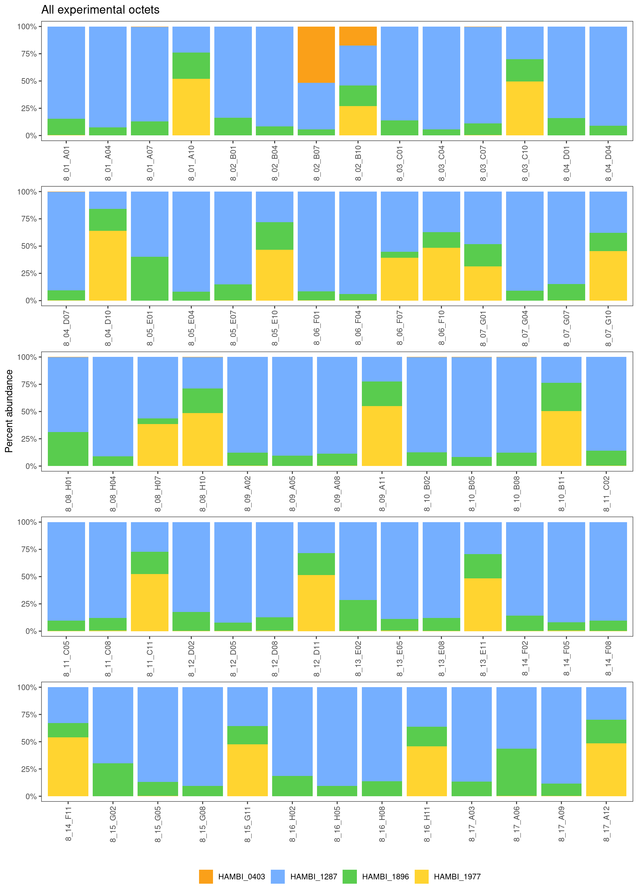

Formatting Rbec output from 2025-05-02 sequenced by BTK Turku using custom HAMBI Illumina v3 primers
1 Setup
1.1 Libraries
1.2 Global variables
Show/hide code
data_raw <- here::here("_data_raw", "communities", "20250502_BTK_illumina_v3")
data <- here::here("data", "communities", "20250502_BTK_illumina_v3")
amplicontar <- here::here(data_raw, "rbec_output.tar.gz")
# make processed data directory if it doesn't exist
fs::dir_create(data)
# create temporary location to decompress
tmpdir <- fs::file_temp()2 Read metadata
3 Read Rbec raw counts tables
3.1 Untar Rbec output tarball
3.2 Setup directory structure
3.3 Read
3.4 Clean up
4 Format
Show/hide code
straintabs_norm <- straintabs %>%
# Calls function that normalize counts by 16S copy number
normalize_by_copy() %>%
# Calls function that completes all combinations of 23 species
# this is important because some species go extinct that should be in the samples
# and we need to have those in the final table
complete_combos() %>%
# removes any extra whitespace on sample names
mutate(sample = str_trim(sample))Make final table
Show/hide code
# Later we will take advantage of the fact that for species not supposed to be
# in a sample the prior left_join will have filled the evo_hist category with an
# NA. We can then filter using this NA value
finaltable <- left_join(straintabs_norm, mddf, by = join_by(sample)) %>%
left_join(spdf, by = join_by(sample, strainID)) %>%
group_by(sample) %>%
dplyr::select(-genus, -species) %>%
mutate(f_raw = count_correct/sum(count_correct),
sample_tot_raw = sum(count_correct)) %>%
ungroup() %>%
relocate(sample_tot_raw, f_raw, target_f, evo_hist, .after = count_correct)5 Analysis
Let’s quickly compare and look the at number of reads from the different kinds of experiment categories. Negative controls are samples from the experiment that contained growth medium but no cells. We included them to make sure that there was not contamination between wells during the experiment. Positive controls contain a mixsture of all 23 species (not sure why this was done), and some wells are just empty but were processed/sequenced anyway for convenience of the person preparing the libraries. Experiment samples are those that came from the actual experiment, and masterplate samples are the defined mixtures we made to inoculate the experiment. We sequenced these masterplates so that we would have T0 information for each experimental treatment.
Show/hide code
finaltable %>%
dplyr::select(sample, sample_tot_raw, community_type) %>%
distinct() %>%
ggplot(aes(x = sample_tot_raw)) +
geom_histogram(bins = 20, aes(fill = community_type)) +
scale_x_log10() +
annotation_logticks(sides = "b", color="grey30") +
labs(y = "Sample count", x = "Total reads per sample") +
facet_wrap(~ community_type, scales="free_y", nrow = 2)
The smallest number of reads in the experimental samples is 340 and the mean is 1.5133^{4} which is considerably more than the smallest number of reads 99 and the mean 199.6 in the negative controls.
Overall this looks pretty good. From the figure above we can see that there is a clear disjoint between about 1000 reads that separate samples that are negative controls and the experimental samples. There is one experimental sample with fewer than 1000 reads. It is likely that this sample failed or it is from a condition where no species survived.
5.1 Negative controls
Read optical density data for the experiment
Show/hide code
OD <- readr::read_tsv(here::here("_data_raw", "communities", "optical_density", "20250425_8sp_5050pairs", "optical_density_formatted.tsv")) %>%
mutate(sample2 = case_when(str_detect(sample, "com_") ~ paste0("8", str_extract(sample, "_\\d+$")),
str_detect(sample, "^3_p") ~ paste0("3_c01_", str_extract(well, "[:upper:]"), str_pad(str_extract(well, "\\d+"), 2, "left", pad = "0")),
str_detect(sample, "^p\\d+") ~ paste0("2_", str_extract(sample, "\\d+"), "_", str_extract(well, "[:upper:]"), str_pad(str_extract(well, "\\d+"), 2, "left", pad = "0")),
str_detect(sample, "^p") ~ str_to_upper(sample)))Rows: 960 Columns: 7
── Column specification ────────────────────────────────────────────────────────
Delimiter: "\t"
chr (2): sample, well
dbl (5): transfers, n_species, strep_conc, replicate, OD
ℹ Use `spec()` to retrieve the full column specification for this data.
ℹ Specify the column types or set `show_col_types = FALSE` to quiet this message.First just checking the negative controls
Show/hide code

Negative controls look good. OD in all negative controls is low (<0.07)
5.2 Positive controls
No positive controls included in this run
5.3 Misassigned reads
These libraries were only prepared with samples containing HAMBI_0403, HAMBI_1287, HAMBI_1896, and HAMBI_1977 so any time species other than these show up is just an incorrect assignment by Rbec or index leakage/crosstalk from the positive community controls. Let’s check quickly how many of these there are…
Show/hide code
There are only a couple of random reads per experimental sample so we can safely ignore them. Since there was no positive control included here the off-target species must come from missassignments and not index leakage from community control.
5.4 Samples with few total reads
Some of the experimental pairs had streptomycin concentrations higher than any of the species individually could tolerate. We would expect then that no species would grow successfully in these samples and that the overall biomass would be very low, thus resulting in a low number of recovered reads from these samples.
To look into this. first let’s check which samples have very low OD600 in the endpoint samples. We’ll filter out samples with an OD of less than 0.1 or samples with fewer than 3000 reads. It is generally good practice to exclude samples with low number of reads.
Show/hide code
Warning in left_join(finaltable, OD, by = join_by(sample == sample2)): Detected an unexpected many-to-many relationship between `x` and `y`.
ℹ Row 24 of `x` matches multiple rows in `y`.
ℹ Row 97 of `y` matches multiple rows in `x`.
ℹ If a many-to-many relationship is expected, set `relationship =
"many-to-many"` to silence this warning.Show/hide code
Warning in left_join(finaltable, OD, by = join_by(sample == sample2)): Detected an unexpected many-to-many relationship between `x` and `y`.
ℹ Row 24 of `x` matches multiple rows in `y`.
ℹ Row 97 of `y` matches multiple rows in `x`.
ℹ If a many-to-many relationship is expected, set `relationship =
"many-to-many"` to silence this warning.There is only one low-read sample. It corresponds to a pair with both ancestral HAMBI_1977 and HAMBI_0403 in 256 ug/ml streptomycin. From monoculture results we know this streptomycin concentration is outside the tolerable range for these two species. Indeed, the OD in this sample at time point 8 is 0.046, which indicates very low biomass at the experiment’s conclusion.
5.5 Filter to target species
Exclude positive and negative controls and also exclude species that are not in the focal 4
Show/hide code
finaltable_exp_mstr <- finaltable %>%
filter(community_type %nin% c("empty", "neg_control", "pos_control")) %>%
filter(sample %nin% lowread_samps) %>%
filter(strainID %in% c("HAMBI_0403", "HAMBI_1287", "HAMBI_1896", "HAMBI_1977")) %>%
group_by(sample) %>%
mutate(f_raw_targetsp = count_correct/sum(count_correct),
sample_tot_targetsp = sum(count_correct)) %>%
ungroup() %>%
relocate(c(sample_tot_targetsp, f_raw_targetsp), .after = f_raw)5.6 Master plates samples
Crosstalk on master plates is quite good - usually < 1% frequency.
Show/hide code
Show/hide code
finaltable_exp_mstr %>%
filter(str_detect(community_type, "master")) %>%
filter(is.na(evo_hist)) %>%
contam_histogram(trans=TRUE, x = f_raw_targetsp) +
labs(x = "Species frequency", y = "Sample count") +
ggtitle("Frequency distribution of each species in master plate samples where it should not be")
5.7 Experimental samples
Show/hide code
There are 39 samples (18% of 213 samples) that exceed a 1% crosstalk threshold. 28 samples (13% of 213 samples) have contamination <= 3% and 12 samples (6 % of 213 samples) have > 3% of a species that should not be there. In most cases the species in highly contaminated samples is HAMBI_1896. In general, this level of contamination is quite low and samples with contamination greater than 3% are just crosstalk outliers.
Show/hide code

Only 6 trio samples look really bad (~50 % contamination). Again, I think we should only exclude samples where the contamination is very high (over ~50% of the sample) but those with around 10% or less contaminant I think can be retained, and I will discard the contaminating sequences. Interestingly the lower-level contamination (3% > contamination > 13%) seems to be mostly from from HAMBI_1896. The high level contamination is always in well C01 on 6 different plates ().
5.8 Plot
5.8.1 Pairs and trios
Show/hide code
finaltable_exp_mstr %>%
filter(str_detect(community_type, "experiment")) %>%
filter(n_species != 8) %>%
group_by(sample) %>%
mutate(id = cur_group_id()) %>%
ungroup() %>%
mutate(facet = ntile(id, 5)) %>%
# to make sure ntile doesnt split up facets
group_by(sample) %>%
mutate(facet = first(facet)) %>%
ungroup() %>%
contaminated_barplot(threshold = 0, quartet = TRUE, y=f_raw_targetsp) +
ggtitle("All experimental pairs and trios") +
facet_wrap(~facet, scales="free_x", nrow=5) +
theme(
strip.background = element_blank(),
strip.text.x = element_blank(),
legend.position = "bottom"
)
At a birds-eye view this looks pretty good overall.
5.8.2 Octets
Again, one weakness of this approach is that there is no way to tell from this data whether an octets is contaminated because every octet (by definition) is inoculated with all of the 4 species at different frequencies and with different evolutionary histories. Thus we would expect to see either all 4 species present or a subset of the 4 species in the quartet samples, but we cannot tell if these patterns come from contamination or not. Moving forward we just have to assume that the quartets are OK… However, we’ve found so little contamination in our other experimental samples and all samples were handled in the experiment and processed for sequence library preparation in the same way. I think it is safe to assume that contamination in the quartets is minimal issue.
Show/hide code
finaltable_exp_mstr %>%
filter(str_detect(community_type, "experiment")) %>%
filter(n_species == 8) %>%
dplyr::select(sample, strainID, count_correct) %>%
distinct() %>%
group_by(sample) %>%
mutate(f_raw_targetsp = count_correct/sum(count_correct)) %>%
mutate(id = cur_group_id()) %>%
ungroup() %>%
mutate(facet = ntile(id, 5)) %>%
# to make sure ntile doesnt split up facets
group_by(sample) %>%
mutate(facet = first(facet)) %>%
ungroup() %>%
ggplot() +
geom_col(aes(x = sample, y = f_raw_targetsp, fill = strainID)) +
labs(y = "Percent abundance", x = "", fill = "") +
scale_fill_manual(values = c("HAMBI_0403" = "#faa019",
"HAMBI_1287" = "#75afff",
"HAMBI_1896" = "#59cc4e",
"HAMBI_1977" = "#ffd430")
) +
scale_y_continuous(labels = percent) +
scale_x_discrete(guide = guide_axis(angle=90)) +
theme_bw() +
theme(panel.grid = element_blank(), legend.position = "right") +
ggtitle("All experimental octets") +
facet_wrap(~facet, scales="free_x", nrow=5) +
theme(
strip.background = element_blank(),
strip.text.x = element_blank(),
legend.position = "bottom"
)
6 Export
Show/hide code
finaltable_exp_mstr_export <- finaltable_exp_mstr %>%
# first remove samples with low read count (< 3000 reads)
filter(sample %nin% lowread_samps) %>%
# exclude any remaining counts from species that shouldnt be there using again
# the fact that evo_hist should be NA for these species
filter(!is.na(evo_hist)) %>%
# because we set 3% as our limit of detection we set read counts of species
# less than 3% to 0
mutate(count_correct_thresh = if_else(f_raw_targetsp <= 0.03, 0, count_correct)) %>%
# now calculate a new relative abundance based only on the species that should
# be present and that are > 3% relative abundance
group_by(sample) %>%
mutate(f_thresh = count_correct_thresh/sum(count_correct_thresh)) %>%
ungroup() %>%
# for marking which sequencing batch these came from
mutate(batch = "run20250502") %>%
dplyr::select(sample, strainID, evo_hist, count_correct_thresh, f_thresh,
target_f_masterplate = target_f, replicate, strep_conc,
transfers, n_species, community_type, plate_well, batch)6.1 Pairs
Show/hide code
finaltable_exp_mstr_export %>%
filter(n_species == 2) %>%
arrange(sample) %>%
# reformating to be compatible with other pair data
mutate(sample = if_else(
community_type == "master",
paste0("P",
str_extract(sample, pattern = '(?<=2_)\\d{2}'), "_s_0"),
paste0("P",
str_extract(sample, pattern = '(?<=2_)\\d{2}'),
"_",
replicate,
"_",
strep_conc
)
)) %>%
write_tsv(here::here(data, "pairs_counts.tsv"))6.2 Trios
Write the trio samples
6.3 Octets
Write the octet samples
Show/hide code
finaltable_exp_mstr_export %>%
filter(n_species == 8) %>%
group_by(sample) %>%
mutate(max_f_sp = if_else(target_f_masterplate == max(target_f_masterplate),
paste0(str_to_upper(evo_hist), "_", str_extract(strainID, "\\d+")),
NA_character_),
max_f = max(target_f_masterplate)) %>%
fill(max_f_sp, .direction = "downup") %>%
group_by(sample, strainID) %>%
mutate(target_f_masterplate = sum(target_f_masterplate)) %>%
ungroup() %>%
dplyr::select(-evo_hist) %>%
# deal with case when all species are equal
mutate(max_f_sp = if_else(max_f == 0.13, "none", max_f_sp)) %>%
mutate(target_f_masterplate = if_else(target_f_masterplate == 0.26, 0.25, target_f_masterplate)) %>%
distinct() %>%
group_by(sample) %>%
mutate(f_thresh = count_correct_thresh/sum(count_correct_thresh)) %>%
relocate(max_f_sp, max_f, .after = target_f_masterplate) %>%
write_tsv(here::here(data, "octets_counts.tsv"))